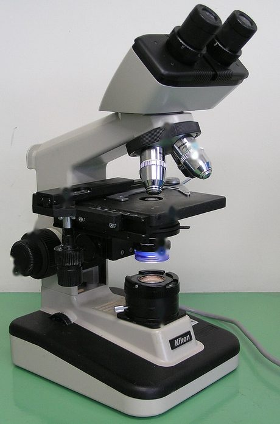
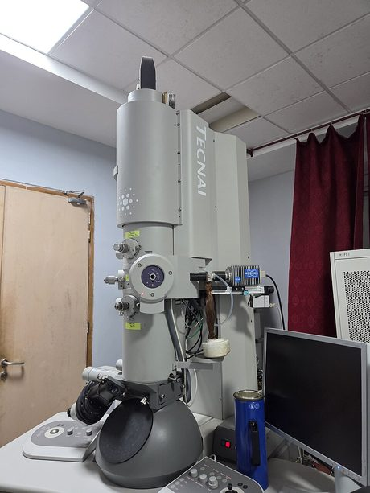
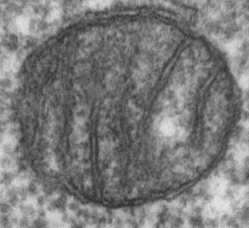
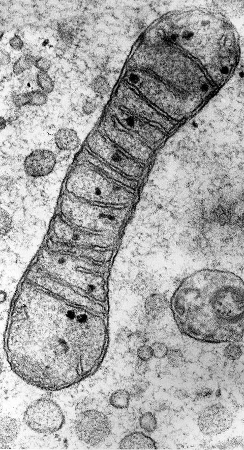
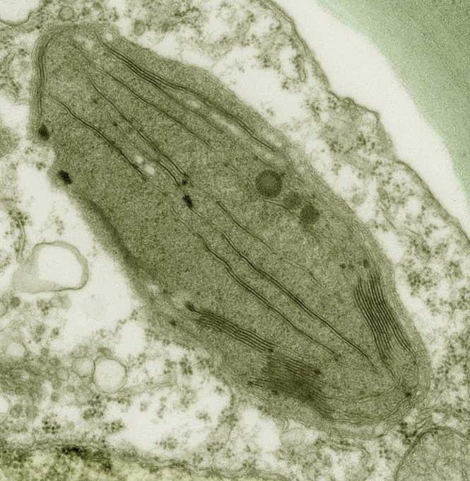
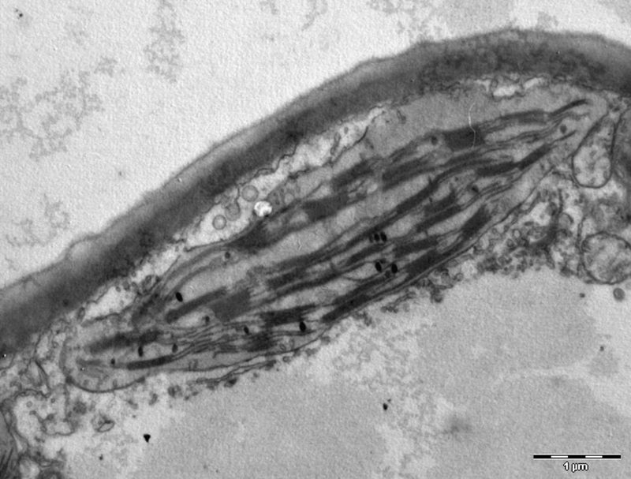
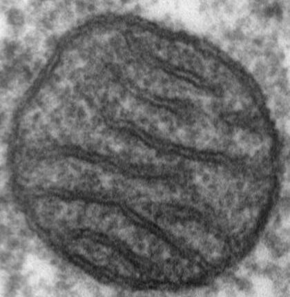

1.1 What Are Cells?
Name: ______________________ Class: ________ Date: ____________
📄 Download printable version (PDF)
Learning outcomes
- Identify and state the functions of the cell structures (including organelles) of typical plant and animal cells from diagrams, light micrographs and as seen under the light microscope using prepared slides and fresh material treated with an appropriate temporary staining technique: cell wall, cell membrane, cytoplasm, nucleus, cell vacuoles (large, sap-filled in plant cells; small, temporary in animal cells), chloroplasts.
- Identify and state the functions of the following organelles from diagrams and electron micrographs: mitochondria, ribosomes.
- Compare the structure of typical animal and plant cells.
Trigger activity
Watch this real video taken through a microscope. A Paramecium is a living thing made of just one cell. As you watch, think: how can one tiny cell move, feed and stay alive on its own? What parts must it have?
Paramecium feeding, seen under a microscope (YouTube: Craig Smith)
What is a cell?
Every living thing is made of cells, just as a building is made of bricks. Cells are the building blocks of life: the simplest structural and functional units of life. Some organisms, such as bacteria, are a single cell. You are made of about 30 trillion cells.
Inside a cell there are smaller structures with special jobs, called organelles (“little organs”). The nucleus, mitochondria and chloroplasts are organelles.
All the living material of a cell is called protoplasm. It is made up of three key parts:
Key idea: structure is linked to function. Each part of a cell has a shape and make-up that suits its job.
In a large organism, cells are organised in levels. Similar cells work together as a tissue, tissues form an organ, organs work together in an organ system, and the systems make up the whole organism.
For example: a muscle cell → muscle tissue → the heart → the circulatory system → you.
Seeing cells: light and electron microscopes
Cells are too small to see with the naked eye, so we use microscopes. A photo taken through a microscope is called a micrograph.


Photos: GcG (public domain, numbers removed); Gannu03, CC BY-SA 4.0, via Wikimedia Commons.

.jpg){kind=link}
| Light microscope | Electron microscope | |
|---|---|---|
| Uses | light | a beam of electrons |
| Picture | light micrograph | electron micrograph |
| Where you meet it | the school lab | research labs (you will see its pictures) |
| Structures you can see | cell wall, cell membrane, cytoplasm, nucleus, vacuole, chloroplasts | all of these plus the small organelles: mitochondria and ribosomes |
Remember: mitochondria and ribosomes are too small to see clearly with a school light microscope. You identify them from diagrams and electron micrographs.
Practical: making a temporary slide of onion cells
- Peel a thin, see-through layer (the epidermis) from the inside of a piece of onion.
- Lay it flat in a drop of water on a clean glass slide. Use a mounting needle so it does not fold.
- Add a drop of iodine solution. The stain makes the nucleus and cell wall easier to see.
- Lower a cover slip slowly, at an angle, using the mounting needle. This stops air bubbles being trapped.
- Soak up extra liquid at the edge with filter paper. Look at the slide under low power first, then high power.
Animal cells (for example cheek cells) are stained with methylene blue. Follow your school’s safety rules for this practical.
Label the cells
Drag each label to the right box. Then press Check my labels. Wrong labels turn red: move them and check again.
Label a typical animal cell. Drag each label into a box (or tap a label, then tap a box).
↔ Swipe sideways to see the whole diagram.
A typical animal cell (not to scale).
Label a typical plant cell. Drag each label into a box (or tap a label, then tap a box).
↔ Swipe sideways to see the whole diagram.
A typical plant cell, e.g. a leaf cell (not to scale).
Video: Introduction to the animal cell (YouTube: Inspirit)
Watch to review the parts of an animal cell and what each one does.
Cell structures and their functions
| Structure | Function | Found in |
|---|---|---|
| Cell membrane | Controls the movement of substances into and out of the cell. It is partially permeable: only small, soluble substances can pass through. | plant and animal cells |
| Cell wall | Protects the cell from injury and gives it a fixed shape. Made of cellulose. It is fully permeable. | plant cells only |
| Cytoplasm | The site of cellular activities. Contains the organelles. | plant and animal cells |
| Nucleus | Controls cell activities such as cell division, growth and repair. Contains chromosomes made of DNA (deoxyribonucleic acid), which carries hereditary information. | plant and animal cells |
| Vacuole | Stores substances. Plant cell: one large central vacuole of cell sap (sugar, mineral salts, amino acids). Animal cell: small, temporary vacuoles of water and food. | plant and animal cells |
| Mitochondria | The site of aerobic respiration, which releases energy for the cell. | plant and animal cells |
| Ribosomes | The site of protein synthesis. | plant and animal cells |
| Chloroplasts | Contain the green pigment chlorophyll, which absorbs light for photosynthesis (how plants make food). | some plant cells |
Common mistakes: the cell wall is fully permeable; the cell membrane is partially permeable. Mitochondria release energy by respiration; they do not “make” energy. Animal cells never have a cell wall.
Comparing plant and animal cells
Animal cell
Plant cell
What they have in common
Both plant and animal cells have a cell membrane, cytoplasm, a nucleus, mitochondria, ribosomes and vacuoles. These structures do the same jobs in both kinds of cell.
How they are different
| Plant cell | Animal cell |
|---|---|
| Cell wall present (made of cellulose) | Cell wall absent |
| Chloroplasts present (in many plant cells) | Chloroplasts absent |
| One large, central vacuole containing cell sap | Numerous small, temporary vacuoles |
| Fixed, regular shape (because of the cell wall) | No fixed shape |
Careful: not every plant cell has chloroplasts. Root cells and onion bulb cells grow in the dark, so they have none. A cell with a cell wall but no chloroplasts can still be a plant cell. The cell wall is the surest sign.
Try it: plant only, animal only, or both?
Choose a button for each structure.
How to answer a “compare” question
In an exam, compare means give similarities and differences. Write each difference as a matched pair, so both cells are mentioned.
Weak answer
“A plant cell has a cell wall and chloroplasts.”
Only one cell is described, and there is no similarity.
Strong answer
“Both cells have a nucleus, cytoplasm and a cell membrane. A plant cell has a cellulose cell wall, but an animal cell does not. A plant cell has one large central vacuole, whereas an animal cell has many small vacuoles.”
Label real cells: light micrographs
These are real photos taken through a light microscope. Real cells look less tidy than diagrams. Use what you know: a cell wall gives plant cells a fixed, box-like shape; a stained nucleus shows up as a dark spot; chloroplasts are green.
Human cheek cells (animal cells) Drag each label into a box (or tap a label, then tap a box).
↔ Swipe sideways to see the whole diagram.
Human cheek cells stained with methylene blue, light microscope.
Photo: Fritzmann2002, CC BY-SA 4.0, via Wikimedia Commons.
.jpg){kind=link}
Onion epidermis cells (plant cells) Drag each label into a box (or tap a label, then tap a box).
↔ Swipe sideways to see the whole diagram.
Onion epidermal cells, stained, light microscope. Notice: no chloroplasts.
Photo: Katekor1, CC BY 4.0, via Wikimedia Commons.

Moss leaf cells (plant cells) Drag each label into a box (or tap a label, then tap a box).
↔ Swipe sideways to see the whole diagram.
Leaf cells of a moss, light microscope (no stain needed).
Photo: Des_Callaghan, CC BY-SA 4.0, via Wikimedia Commons.

Label real cells: electron micrographs
An electron microscope shows much more detail, so you can see the small organelles. Electron micrographs are black and white; colour is sometimes added afterwards to make parts easier to see.
Part of a liver cell (animal cell) Drag each label into a box (or tap a label, then tap a box).
↔ Swipe sideways to see the whole diagram.
Part of a liver cell, electron micrograph. The nucleus (purple) and mitochondria (green) have been coloured. The tiny dark dots are ribosomes.
Image (cropped): Bochimoto H, Matsuno N, Ishihara Y et al., CC BY 4.0, via Wikimedia Commons.

Part of a leaf cell (plant cell) Drag each label into a box (or tap a label, then tap a box).
↔ Swipe sideways to see the whole diagram.
Part of a leaf cell, electron micrograph (about 12 000 times bigger than life). The lines inside the chloroplast are where light is absorbed.
Image: and3k and caper437, CC BY-SA 3.0, via Wikimedia Commons.

Spotting mitochondria and chloroplasts
In the exam you may be shown an electron micrograph and asked to name the organelle. These two are the ones to know well. They look quite different once you know what to look for.
Mitochondria


- Shape: small ovals or sausages (often round when cut across).
- Edge: a smooth double membrane.
- Inside: many folds of the inner membrane, like shelves or fingers. The folds give a large surface for aerobic respiration.
- Where: in the cytoplasm of almost every plant and animal cell. Very active cells (muscle, liver) have lots.
Images: Louisa Howard, Dartmouth Electron Microscope Facility (public domain, via Wikimedia Commons); Prof. R. Bellairs, CC BY 4.0, Wellcome Collection.

Chloroplasts


- Shape: a large lens or oval, much bigger than a mitochondrion.
- Inside: long, parallel membranes with dark stacks (like piles of coins). Chlorophyll is in these membranes, where light is absorbed.
- Where: only in some plant cells (e.g. leaf cells), usually near the cell wall.
Images: Kevin Mackenzie, University of Aberdeen, CC BY 4.0, Wellcome Collection (cropped); and3k and caper437, CC BY-SA 3.0, via Wikimedia Commons.
| Look for… | Mitochondrion | Chloroplast |
|---|---|---|
| Size | small | large (several times longer) |
| Membranes inside | folds that stick in from the edge | long parallel membranes with dark stacks |
| Found in | plant and animal cells | some plant cells only |
| Job | aerobic respiration | photosynthesis |
Spot the organelle
A. This electron micrograph shows part of an animal cell. Name the organelle labelled X. (There are many more of them in this cell.)

B. Name the organelle in this electron micrograph.
C. A student finds an organelle with stacks of membranes in an electron micrograph of a cell. What can the student conclude?
Question A image: Dr Jeremy Skepper, CC BY 4.0, Wellcome Collection (arrow added). Question B image: credited above.
Check your understanding
1. Which structure controls the movement of substances into and out of a cell?
2. Which structure contains chromosomes made of DNA?
3. Where is protein made in a cell?
4. A student looks at a cheek cell under a school light microscope. Which structure will the student NOT be able to see clearly?
5. Why is the cover slip lowered slowly, at an angle, when making a slide?
6. Which three structures are found in plant cells but NOT in animal cells?
7. A cell has a cell wall and a large vacuole but no chloroplasts. Where could it come from?
8. Which statement about animal cells is correct?
9. Why do both plant and animal cells have mitochondria?
Exam practice: try the structured question comparing a liver cell and a root hair cell (Section B, question 6) on the Revision Questions page.